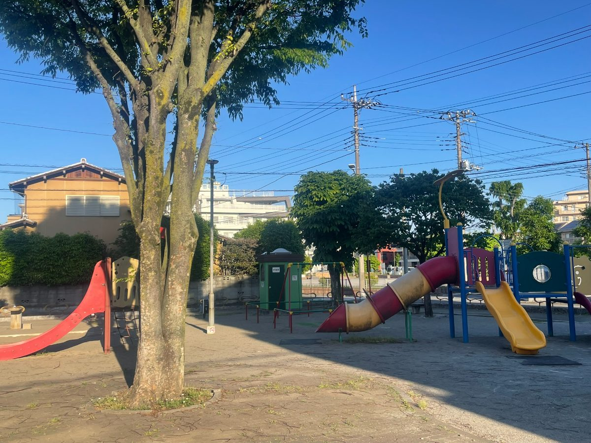
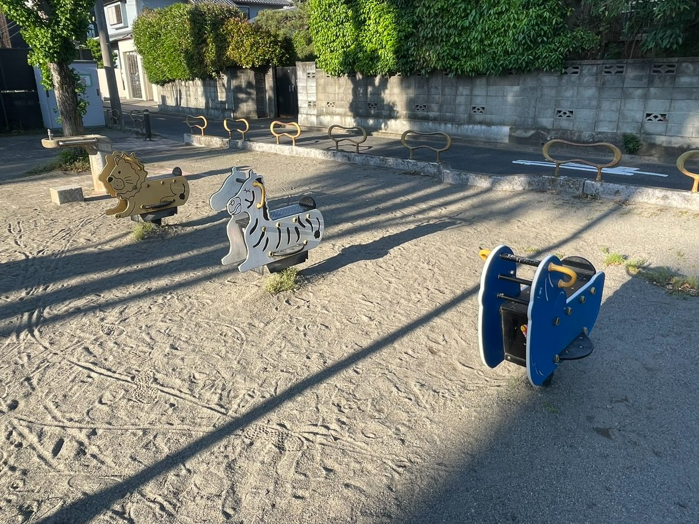
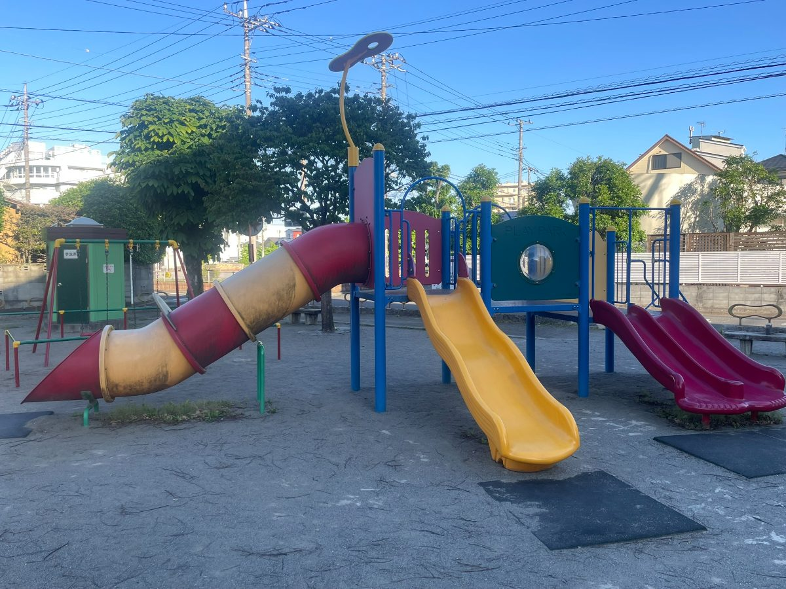
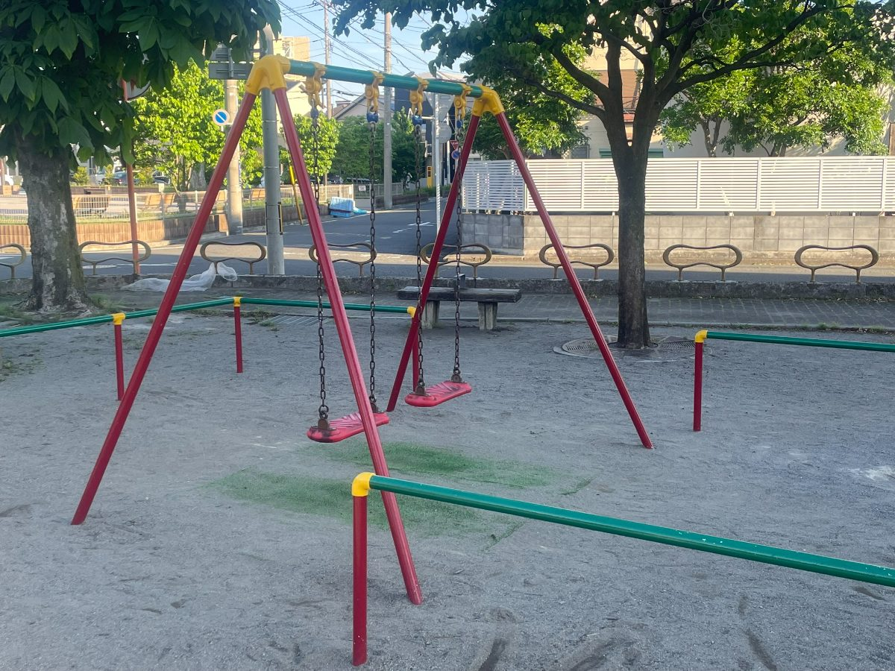
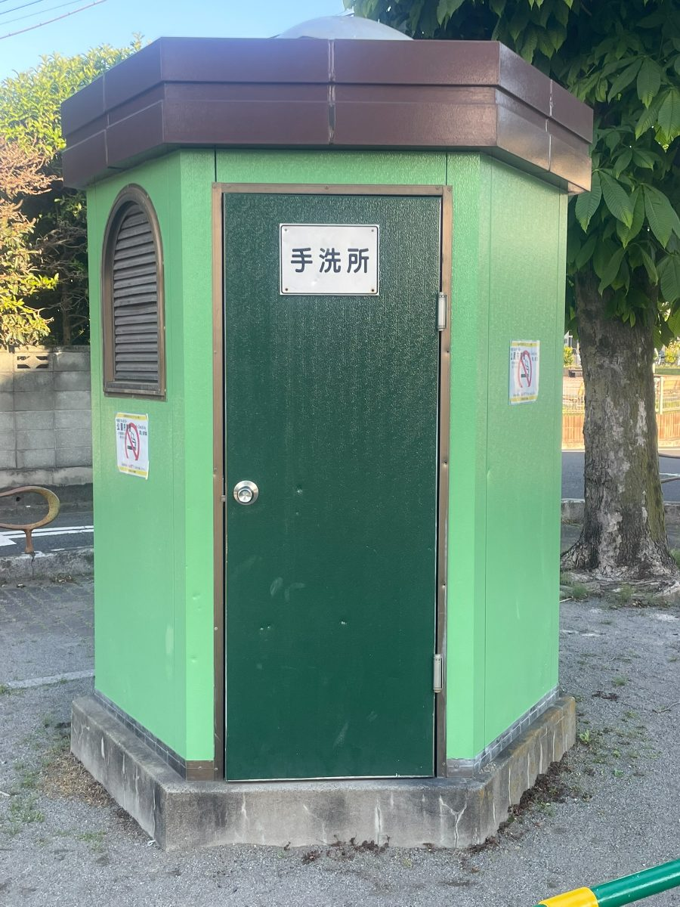

🌳 戸田市公園ガイド
ホーム
› 戸田・新曽エリア › 元蕨第三公園
戸田・新曽エリア
元蕨第三公園
📍 上戸田2-9
⭐ この公園の特筆ポイント
✅ 🛝 複合遊具とトンネルすべり台が充実した遊び場
✅ 🐯 ユニークな動物型のスプリング遊具が楽しい
✅ 🌳 大きな木陰があり夏でも快適に過ごせる
📸 写真ギャラリー





🎯 設備情報
🛝
ブランコ
あり
🛝
すべり台
あり
⛱️
砂場
なし
🚽
トイレ
あり
🅿️
駐車場
なし
💧
水遊び
なし
🐕
犬の散歩OK
なし
🪑
ベンチ
あり
⚽
ボール遊びOK
なし
☂️
日陰あり
なし
🏪
コンビニ近く
なし
🛒
スーパー近く
なし
ℹ️ 基本情報
公園名
元蕨第三公園
住所
上戸田2-9
エリア
戸田・新曽エリア
🗺️ アクセスマップ
← 公園一覧に戻る